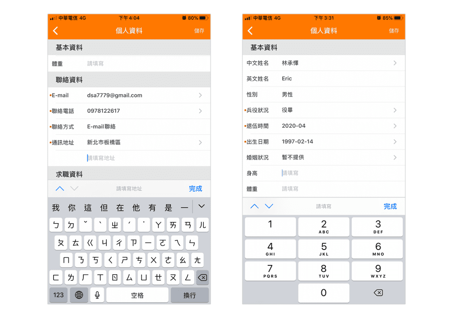

104 長年坐穩台灣求職平台龍頭，因應使用設備趨勢也在手機推出 App 提供服務。作為使用者之一， 這次專案希望可以從用戶體驗要素中的框架層及表現層切入， 針對產品的「篩選及履歷編輯功能」進行競品分析並做出優化設計。

Photo by
Marcel Friedrich
on
Unsplash
2020.4-5（一個月）
個人 Redesign 練習
競品分析、介面設計
104 長年坐穩台灣求職平台龍頭，因應使用設備趨勢也在手機推出 App 提供服務。作為使用者之一， 這次專案希望可以從用戶體驗要素中的框架層及表現層切入， 針對產品的「篩選及履歷編輯功能」進行競品分析並做出優化設計。
104 的競品廣義來說除了傳統的數字銀行還包括了 LinkedIn、 yourator、CakeResume 等等新型態的求職平台，但因為彼此的目標客群和產品功能並沒有那麼相似，其中一些平台也還沒有移動端的產品，因此這次決定仍然先以其他三家數字銀行做為主要的競品對象。
在這個部分我設定了一項簡單的任務 —— 在搜尋中篩選「台北市」及「新北市」，找來一位朋友觀察他的操作，以下是不同產品的操作流程及分析：
使用者在選擇完台北市後很明顯花了較多時間思考下一步，最後選擇了點擊「完成」按鈕。
但事實上目前的設計想要回到縣市選擇頁必須點擊返回鍵，使用者會感到困惑的原因出在返回鍵更多時候代表的是「取消」、「上一步」，因此很難跟「繼續篩選」的動作做聯想。
使用者在操作 1111 時並沒有遇上太大的問題，在設計上 1111 在選擇「區」的步驟透過螢幕 2/3 範圍的 popup 視窗與前一個頁面做出主次關係，跟 104 相比能夠讓使用者 更清楚點擊按鈕後將發生什麼事。
518 和 yes123 在這個設定的任務中表現的最出色，兩者頁面上的設計不只資訊間階層明確，讓使用者能夠一目了然，同時也只需要透過最少的點擊次數和經過頁面就能完成任務。
但不管是 104 還是 518 都有個可以改善的地方：
左下角的「清除重選」在產品中代表的是清除「全部」條件，若是不清楚的使用者點擊了可能會造成毀滅性的後果，解決的辦法有幾個：
1. 更明確定義按鈕意義
2. 提供確認視窗
3. 提供復原操作
前兩者預防錯誤發生，後者則把錯誤的傷害降到最低。
首先我想分析在一份新的履歷中，其中的架構及導覽是如何引導使用者完成一份履歷。

可以發現 104 和 yes123
較特別的地方是都會先條列出目錄，讓使用者可以一覽接下來需要完成的任務大概有哪些，差別在於
104 多出了進度條。
事實上詢問了兩位使用者後，也發現編輯履歷確實很多時候不是一次就可以完成的任務，使用者極有可能在過程中途離開，這時進度條可以幫助使用者辨認而不是記憶上次完成的進度，而能夠一眼看清楚的目錄則能夠幫助使用者快速進入該區塊進行編輯，因此我認為就架構來說
104
的設計是個不錯的選擇，不過相較「刪除」，把「預覽」作為這個頁面主要的
CTA 按鈕可能會是更好的選擇。
接著我想從細節上分析實際編輯履歷時的設計及互動方式。
首先 104
欄位互動的方式可以大概分成兩種：輸入和選項。
輸入的部分大致上沒有問題，但就預防錯誤及回饋而言似乎缺少了點考量，比如說有固定格式的手機號碼欄位在這裡並沒有提供限制，使用者輸入錯誤的格式後系統也不會提供回饋。

除了以 picker
互動的時間類欄位外，其他選項目前的設計是使用由右至左移入的 modal
view，但有一個問題是對於一些選項較少的欄位來說使用者的視線會需要較大幅度的移動。
另外目前的設計是把標籤（label）放在欄位的左側，但根據研究顯示，把標籤放在欄位的左上側能夠讓視線的移動更順暢，優化表單的完成時間。
1111 和 518 與 104
最大的差別在於單選及複選都是使用彈出視窗與使用者互動，缺點是目前的設計缺乏合適的動畫，所以視覺上侵入性較強，好處是進行操作時不用離開目前的視窗，且像
1111 那樣把視窗置於底部的話會更便於單手操作。
yes123
則是一些選項較少的欄位會直接顯示選項，這種設計解決了過少的選項會導致使用者視線大幅移動的缺點，是可以參考的方向。
從一些截圖來看，可以發現首先在顏色使用上大致就是白色、黑色及灰色，品牌色用來強調前饋及回饋，但在灰色的使用上
104 和 yes123 顯得較為混亂。
而在資訊的分隔和群組上，104 和 yes123 較常使用線條，而 1111 和 518
更多是透過顏色，這些原因加上 icon 、欄位及按鈕的樣式讓 104 和 yes123
目前的設計顯得較老，因此這次設計在視覺上希望可以達成讓品牌年輕化的目標，同時也制定出一致的設計規範。
在履歷主頁的部分，根據前面的結論保留了目錄及進度設計，幫助使用者記憶編輯進度，另外重新繪製了視覺一致的 icon。

在履歷表單的部分，選項較少的欄位調整成直接顯示選項，改善視線移動問題。

選項較多的欄位則統一使用 modal view， 加強頁面層級關係，同時改善 popup 視窗侵入性過強的問題。

輸入欄位的部分則定義好元件的不同狀態，在特定欄位提供格式限制，預防錯誤發生。

在搜尋篩選的部分參考了 518 的設計，在同個畫面同時呈現不同層級的分類，減少使用者操作所需經過的頁面及點擊次數。在具有破壞性操作的按鈕上則更明確描述動作，同時也提供確認視窗及復原操作，防止並彌補錯誤發生。